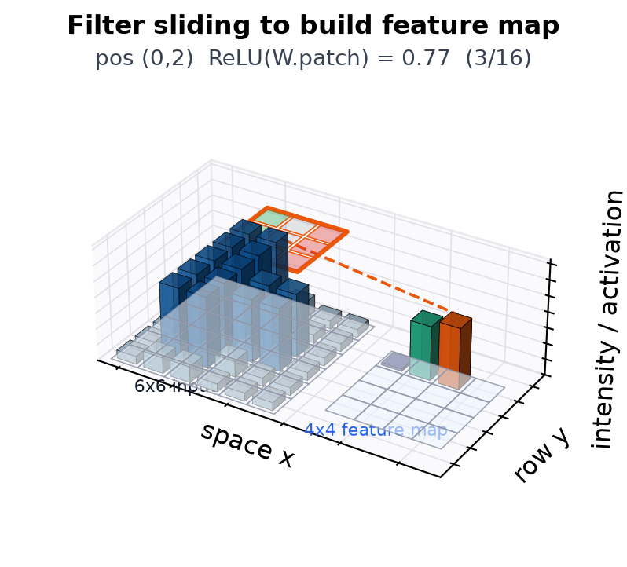
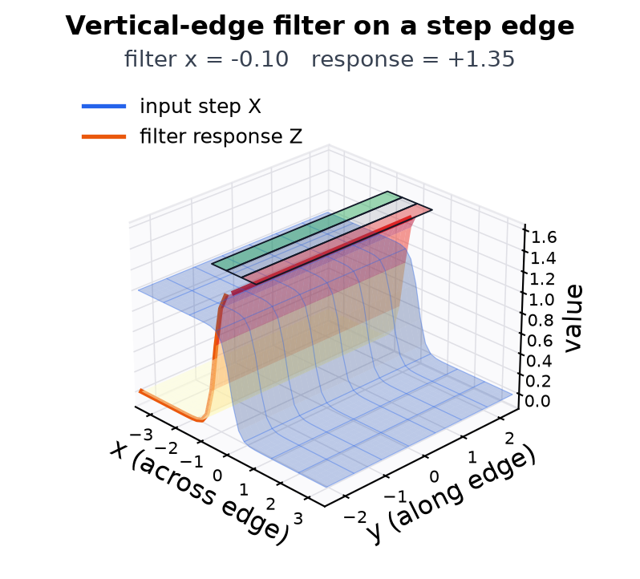
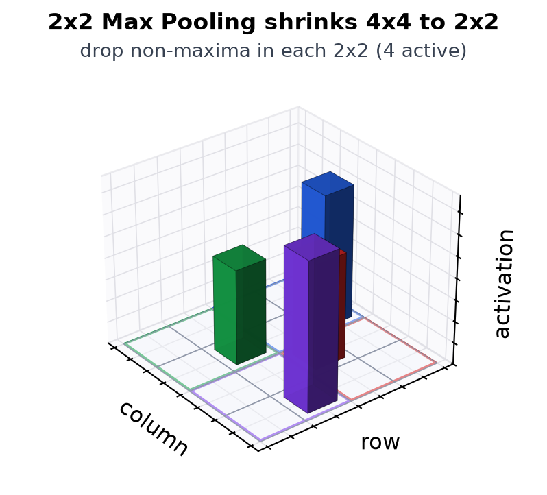
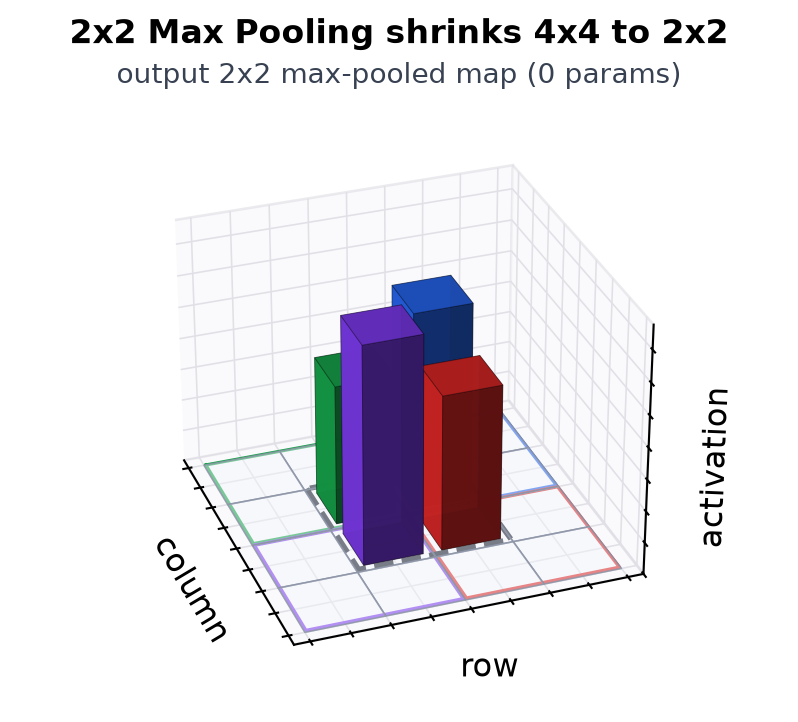
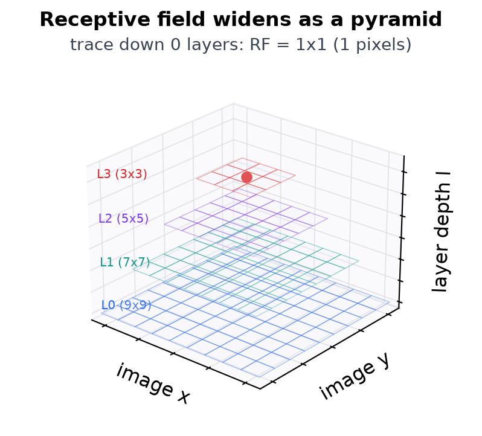
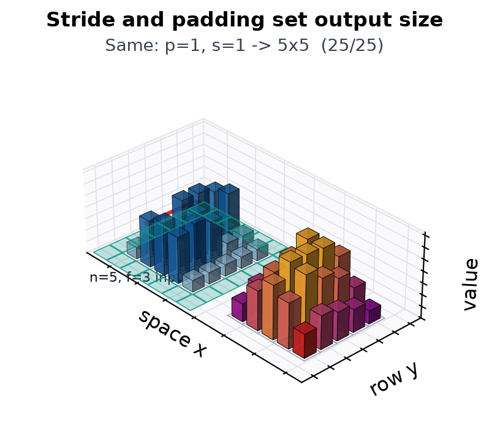
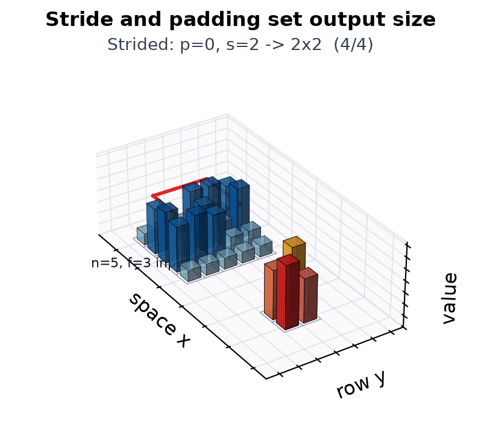

Wrap-up और Optional Topic: Convolutional Neural Networks
Theory
इस lecture में: भाग A में पूरे CS229 सफ़र का सारांश: Lectures 2 से 19 का course map, बार-बार लौटने वाले छः बुनियादी ideas (Maximum Likelihood, Convexity, Bias बनाम Variance, Kernels, Latent Variables और EM, Bellman Equations), किसी नई problem के लिए सही algorithm चुनने की विधि, और आगे की पढ़ाई की दिशाएँ। भाग B में images के लिए Convolutional Neural Networks (CNNs): fully-connected networks की सीमा, 2D convolution (filter, stride, padding, output size का सूत्र और उदाहरण), 3D volumes और parameter sharing, ReLU, Max और Average Pooling, आम CNN architecture, receptive field, और backpropagation से training।
1. एक line में idea
इस आख़िरी lecture के दो मकसद हैं। पहला, पीछे मुड़कर देखना कि अलग-अलग दिखने वाले लगभग बीस algorithms असल में पाँच-छः गहरे गणितीय विचारों के ही अलग-अलग रूप हैं। दूसरा, यह समझना कि जब input कोई तस्वीर हो, तो हर pixel को हर neuron से जोड़ने के बजाय छोटे खिसकते हुए filters (convolutions) और parameter sharing का इस्तेमाल करके हम हज़ारों गुना कम weights में दुनिया के सबसे ताकतवर vision models कैसे बना लेते हैं।
2. भाग A: Course Map (Lectures 2 से 19)
Lecture 1 में हमने Supervised, Unsupervised और Reinforcement Learning की बुनियाद रखी थी। उसके बाद के अठारह lectures का पूरा नक्शा एक नज़र में नीचे दिया है:
| Lecture | Topic | मुख्य Algorithm | Key Idea |
|---|---|---|---|
| 2 | Linear Regression | Batch GD, SGD, Normal Equations | Gaussian noise मानने पर squared error घटाना ही Maximum Likelihood है |
| 3 | Classification और Local Fit | Logistic Regression, LWR, Perceptron, Newton's Method | Sigmoid linear score को probability बनाता है; Newton curvature (\(H^{-1}\)) से तेज़ कूदता है |
| 4 | Generalized Linear Models | Exponential Family, GLMs, Softmax Regression | Response का distribution चुनते ही canonical link और convex log-loss अपने आप तय हो जाते हैं |
| 5 | Generative Learning | GDA, Naive Bayes | \(p(y \mid x)\) सीधे सीखने के बजाय \(p(x \mid y)\) और \(p(y)\) सीखकर Bayes rule से पलटें |
| 6 | Smoothing और Margins | Laplace Smoothing, Hard-Margin SVM | हर गिनती में \(1\) जोड़कर zero probability रोकें; सबसे चौड़े geometric margin वाला hyperplane चुनें |
| 7 | Non-linear SVMs | Kernels, L1 Soft-Margin SVM, SMO | \(K(x, z) = \langle \phi(x), \phi(z) \rangle\) से बिना \(\phi(x)\) बनाए उच्च-आयामी space में boundary खींचें |
| 8 | Generalization Theory | Ridge (L2), Lasso (L1), Cross-Validation | Test error = Bias\(^2\) + Variance + Noise; regularization और validation सही complexity चुनते हैं |
| 9 | Trees और Ensembles | Decision Trees, Bagging, Random Forests, Boosting | समांतर औसत (bagging) variance घटाता है; क्रमिक सुधार (boosting) bias घटाता है |
| 10 | Neural Networks: Basics | Multi-layer Perceptrons, Forward Propagation | Non-linear hidden layers data को ऐसे मोड़ती हैं कि आख़िरी linear layer उसे बाँट सके |
| 11 | Neural Network Training | Backpropagation, He/Xavier Init, Adam/Momentum | Chain rule पीछे से आगे के intermediates दोबारा इस्तेमाल करके सारे gradients एक pass में निकालता है |
| 12 | ML Diagnostics | Error Analysis, Ablation, Precision/Recall | नया model लिखने से पहले learning curves से जाँचें कि असली रुकावट bias है, variance है या data |
| 13 | Clustering और Mixtures | K-means, Mixture of Gaussians, EM | छिपे cluster labels का पोस्टीरियर अंदाज़ा लगाएँ (E-step) और lower bound maximize करें (M-step) |
| 14 | High-Dimensional Density | Factor Analysis (EM के साथ) | \(m < n\) में भी कम-आयामी छिपे कारक \(z \in \mathbb{R}^k\) से \(\Sigma = \Lambda\Lambda^T + \Psi\) सीखें |
| 15 | Subspaces और Sources | PCA, ICA | PCA अधिकतम variance की orthogonal दिशाएँ ढूँढता है; ICA non-Gaussian स्वतंत्र स्रोत अलग करता है |
| 16 | Sequential Decisions | MDPs, Bellman Equations | किसी state की value तात्कालिक reward और अगली state की discounted expected value का जोड़ है |
| 17 | MDP Solvers | Value Iteration, Policy Iteration, Fitted VI | Bellman backup एक \(\gamma\)-contraction है जो \(V^*\) पर जाता है; continuous states में \(V\) को approximate करें |
| 18 | Model-Free RL | Q-Learning, Value Function Approximation | Transition \(P_{sa}\) जाने बिना अनुभव \((s, a, r, s')\) के temporal-difference error से \(Q^*\) सीखें |
| 19 | Control और Policy Search | LQR, DDP, LQG, REINFORCE | रेखीय-द्विघात तंत्र में Riccati से सटीक control निकलता है; वरना सीधे \(\nabla_\theta \mathbb{E}[\text{payoff}]\) चढ़ें |
3. पूरे Course को जोड़ने वाले छः बड़े Ideas
जब आप अलग-अलग chapters के formulas को एक साथ रखते हैं, तो बार-बार वही छः स्तंभ सामने आते हैं:
- Maximum Likelihood Estimation (MLE): लगभग हर probabilistic model एक ही सवाल से शुरू होता है: \(\hat{\theta} = \arg\max_\theta \sum_{i=1}^{m} \log p(\text{data}^{(i)}; \theta)\)। Gaussian शोर मानने से Least Squares (Lecture 2), Bernoulli से Logistic cross-entropy (Lecture 3), Multinomial से Softmax loss (Lecture 4), और joint \(p(x, y)\) से GDA तथा Naive Bayes (Lecture 5) निकलते हैं। Regularization जोड़ना भी बस parameter पर Gaussian या Laplace prior लगाकर MAP अनुमान लेना है (Lecture 8)।
- Convexity: यदि आपका cost function \(J(\theta)\) कटोरे जैसा convex है (या log-likelihood concave है), तो कोई भ्रामक local minimum नहीं होता और Gradient Descent या Newton's Method वैश्विक समाधान तक पहुँचते हैं। Linear Regression, Logistic Regression, GLMs और SVM का dual problem इसी सुरक्षित दुनिया में रहते हैं। इसके विपरीत Neural Networks, K-means और GMMs non-convex हैं: वहाँ random initialization और optimization की सावधानी निर्णायक हो जाती है।
- Bias बनाम Variance का तराज़ू: बहुत सादा model असली रिश्ते को पकड़ नहीं पाता (high bias / underfitting), और ज़रूरत से ज़्यादा लचीला model training के शोर को ही नियम मान लेता है (high variance / overfitting)। Regularization parameter \(\lambda\), polynomial degree, SVM का \(C\), tree की गहराई, और neural network का आकार: ये सभी इसी तराज़ू को साधने के अलग-अलग बटन हैं।
- Kernels और Representation: किसी कठिन problem को आसान बनाने का सबसे सुंदर रास्ता है input \(x\) को बेहतर निर्देशांकों \(\phi(x)\) में देखना। SVMs में kernel \(K(x, z)\) यह काम तयशुदा गणितीय अंतरंग गुणनफल से करता है (Lecture 7), PCA/ICA बिना labels के उपयोगी अक्ष खोजते हैं (Lecture 15), और Neural Networks तथा CNNs यही \(\phi(x)\) सीधे डेटा से सीख लेते हैं (Lectures 10, 20)।
- Latent Variables और EM: जब डेटा के पीछे कोई अनदेखा कारण \(z^{(i)}\) छिपा हो (कौन सा cluster, या कौन सा छिपा factor), तो \(\log \sum_z p(x, z; \theta)\) सीधे हल नहीं होता। Jensen's inequality से निचला bound बनाकर E-step में \(z\) का posterior भरना और M-step में पूरा डेटा मानकर \(\theta\) सुधारना एक ऐसा साँचा है जो हर iteration में likelihood को गारंटी के साथ ऊपर ले जाता है (Lectures 13, 14)।
- Bellman Equations: जब आज का action कल की दुनिया बदलता है, तब सभी भविष्य के कदमों का जोड़ एक छोटे स्व-संगत समीकरण \(V^*(s) = R(s) + \gamma \max_a \mathbb{E}_{s'}[V^*(s')]\) में सिमट जाता है। Dynamic programming, Q-learning और LQR सब इसी एक समीकरण को अलग-अलग परिस्थितियों में हल करने के तरीके हैं (Lectures 16 से 19)।
4. किसी नई Problem के लिए Algorithm कैसे चुनें
असली दुनिया में सबसे बड़ी गलती है पहले दिन ही सबसे जटिल model लगा देना। Lecture 12 की भावना के अनुसार हमेशा एक तेज़, सरल baseline से शुरू करें, फिर नीचे के नक्शे से आगे बढ़ें:
| परिस्थिति और Data का रूप | पहली पसंद (Baseline) | अगला ताकतवर कदम | क्यों |
|---|---|---|---|
| कम examples (\(m\) छोटा), बहुत से features | Naive Bayes / GDA या L2 Logistic | Linear SVM | कम parameters और मज़बूत prior overfitting से बचाते हैं |
| सारणीबद्ध (tabular) डेटा, मध्यम से बड़ा \(m\) | Linear / Logistic Regression | Gradient Boosted Trees या Random Forest | विषम scales और non-linear feature interactions को बिना भारी tuning के पकड़ते हैं |
| साफ़ non-linear boundary, मध्यम \(m\) | Logistic Regression | RBF Kernel SVM या छोटा MLP | Convex margin या सीखे हुए hidden features मोड़दार सीमा बनाते हैं |
| असंरचित डेटा: तस्वीरें, आवाज़, लंबा पाठ | सरल linear/pooled baseline | CNN (तस्वीरों पर) या गहरे Neural Nets | कच्चे pixels/signals से पदानुक्रमित (hierarchical) features खुद सीखते हैं |
| बिना labels का डेटा: समूह या संपीड़न | K-means या PCA | GMM (soft clusters), Factor Analysis (\(m < n\)), ICA | ज़रूरत के मुताबिक गोलाकार झुंड, covariance ढाँचा या स्वतंत्र स्रोत मिलते हैं |
| क्रमिक फ़ैसले और विलंबित reward | ज्ञात मॉडल हो तो Value Iteration / LQR | अनजान मॉडल हो तो Q-Learning या Policy Search | State-action अनुभव या सटीक रैखिक dynamics से सीधे optimal policy सीखते हैं |
एक नियम हमेशा याद रखें: अच्छा डेटा और सही error analysis अक्सर चतुर algorithm से ज़्यादा फ़ायदा देते हैं। Validation curve देखकर तय करें कि आपको ज़्यादा features चाहिएँ (high bias का इलाज) या ज़्यादा डेटा और regularization (high variance का इलाज)।
5. इसके आगे क्या पढ़ें
CS229 ने आपको पूरे Machine Learning की मज़बूत नींव दे दी है। यहाँ से आगे चार प्रमुख रास्ते खुलते हैं:
- Deep Learning की शाखाएँ: Computer Vision के लिए आधुनिक CNNs (ResNets, U-Net, Object Detection), भाषा और अनुक्रमों के लिए Sequence Models और Transformers (Attention तंत्र और Large Language Models), तथा नई तस्वीरें या डेटा बनाने के लिए Diffusion Models और VAEs।
- Probabilistic Graphical Models: Bayesian Networks और Markov Random Fields, जहाँ सैकड़ों यादृच्छिक चरों के बीच सशर्त स्वतंत्रता को ग्राफ़ से लिखकर अनुमान लगाया जाता है।
- Convex Optimization और Statistical Learning Theory: यह गहराई से समझना कि कौन से optimization algorithms कितनी तेज़ी से अभिसरण करते हैं, और सीमित डेटा से सीखने की सैद्धांतिक सीमाएँ (VC dimension, Rademacher complexity) क्या हैं।
- Deep Reinforcement Learning और ML Systems: Q-learning और Policy Gradient को गहरे networks से जोड़ना, तथा बड़े मॉडलों को असली दुनिया में कुशलता, निष्पक्षता और भरोसे के साथ चलाना।
6. भाग B: Images पर Fully-Connected Networks क्यों अटक जाते हैं
अब हम एक वैकल्पिक पर बेहद प्रभावशाली विषय पर आते हैं: Convolutional Neural Networks (CNNs)। मान लीजिए आपके पास \(1000 \times 1000\) pixels की एक साधारण रंगीन (RGB) तस्वीर है। हर pixel में लाल, हरा और नीला तीन मान हैं, तो कुल inputs हुए \(n = 1000 \times 1000 \times 3 = 3 \times 10^6\)। यदि आप Lecture 10 वाला एक साधारण fully-connected network बनाएँ जिसकी पहली hidden layer में सिर्फ़ \(1000\) neurons हों, तो अकेले \(W^{[1]}\) में weights की संख्या होगी:
\[1000 \times (1000 \times 1000 \times 3) = 3 \times 10^9 \text{ parameters}\]
तीन अरब weights सिर्फ़ पहली layer में! इतने विशाल matrix के दो तुरंत नुकसान हैं: पहला, विशाल memory और गिनती का खर्च; दूसरा, लाखों तस्वीरों के बाद भी भयानक overfitting।
पर समस्या सिर्फ़ गिनती की नहीं, ज्यामिति की भी है। तस्वीर को मोड़कर \(3 \times 10^6\) लंबा एक सपाट vector बनाते ही हम यह भूल जाते हैं कि pixel \((10, 10)\) के ठीक बगल में \((10, 11)\) और \((11, 10)\) बैठे हैं। साथ ही तस्वीरों में दो स्वाभाविक गुण होते हैं:
- Locality: किसी छोटे हिस्से का मतलब (जैसे कोई किनारी या कोना) सिर्फ़ आस-पास के पड़ोसी pixels को देखकर पता चल जाता है, कोसों दूर के कोने से नहीं।
- Translation invariance / stationarity: जो पैटर्न ऊपरी बाएँ कोने में खड़ी किनारी या आँख पहचानता है, ठीक वही पैटर्न निचले दाएँ कोने में भी काम आना चाहिए।
CNN इन दोनों गुणों को सीधे network की बनावट में पिरो देता है।
7. 2D Convolution: Filter, Stride, Padding और Output Size
| Symbol | मतलब |
|---|---|
| \(X \in \mathbb{R}^{n_H \times n_W}\) | एक-चैनल (grayscale) 2D input तस्वीर (सरलता के लिए \(n_H = n_W = n\)) |
| \(W \in \mathbb{R}^{f \times f}\) | छोटा खिसकने वाला filter या kernel (आमतौर पर \(f = 3\) या \(5\)), और \(b \in \mathbb{R}\) उसका bias |
| \(p\) | padding: चारों किनारों पर जोड़ी गई शून्यों (zeros) की पट्टियों की चौड़ाई |
| \(s\) | stride: हर कदम में filter कितने pixels आगे या नीचे खिसकता है |
| \(Z \in \mathbb{R}^{n_{\text{out}} \times n_{\text{out}}}\) | बाहर निकलने वाला feature map (activation से पहले) |
Convolution कैसे काम करता है: हम छोटे \(f \times f\) filter \(W\) को तस्वीर के ऊपरी-बाएँ कोने पर रखते हैं, ढके हुए \(f \times f\) टुकड़े और \(W\) का element-दर-element गुणा करके जोड़ते हैं, और bias \(b\) मिला देते हैं। फिर filter को \(s\) कदम दाएँ खिसकाते हैं, और पंक्ति खत्म होने पर \(s\) कदम नीचे। Padded तस्वीर \(\tilde{X}\) पर स्थान \((i, j)\) (शून्य से गिनते हुए) का मान है:
\[Z_{i, j} = \sum_{u=0}^{f-1} \sum_{v=0}^{f-1} \tilde{X}_{i \cdot s + u,\; j \cdot s + v}\, W_{u, v} + b\]
(तकनीकी टिप्पणी: शुद्ध गणित में convolution लिखते समय \(W\) को उल्टा पलटा जाता है, पर Deep Learning में बिना पलटे ऊपर लिखे cross-correlation को ही सर्वत्र convolution कहा जाता है, क्योंकि \(W\) तो डेटा से सीखा जाना है।)
Padding और Stride से Output Size का सूत्र
मान लीजिए मूल तस्वीर \(n \times n\) की है। चारों ओर \(p\) चौड़ाई की zero-padding लगाने से नई चौड़ाई \(n + 2p\) हो जाती है। पहला \(f\)-चौड़ा window बाएँ सिरे से \(f\) स्थान घेरता है, जिसके बाद दाईं तरफ़ \((n + 2p) - f\) pixels बचते हैं। हर छलाँग \(s\) pixels की है, इसलिए हम दाईं ओर अधिक से अधिक \(\lfloor (n + 2p - f)/s \rfloor\) बार खिसक सकते हैं। शुरुआती पहला स्थान जोड़ने पर output का आकार मिलता है:
\[n_{\text{out}} = \left\lfloor \frac{n + 2p - f}{s} \right\rfloor + 1\]
ऊँचाई और चौड़ाई अलग हों तो यही सूत्र \(n_H\) और \(n_W\) पर अलग-अलग लगता है। Padding की दो प्रचलित शैलियाँ हैं:
- Valid convolution (\(p = 0\)): कोई padding नहीं; हर layer के बाद \(n_{\text{out}} = \lfloor (n - f)/s \rfloor + 1\) घटता जाता है, और कोने वाले pixels सिर्फ़ एक बार देखे जाते हैं।
- Same convolution: जब \(s = 1\) हो और \(f\) विषम हो, तब \(p = \frac{f - 1}{2}\) रखने से \(n_{\text{out}} = n + (f - 1) - f + 1 = n\) मिलता है, यानी output का आकार input के ठीक बराबर रहता है और किनारे वाले pixels की जानकारी भी नहीं दबती।
आकार के उदाहरण: यदि \(32 \times 32\) तस्वीर पर \(f = 3, p = 1, s = 1\) लगाएँ, तो \(n_{\text{out}} = \lfloor (32 + 2 - 3)/1 \rfloor + 1 = 32\)। यदि \(f = 5, p = 0, s = 2\) लगाएँ, तो \(n_{\text{out}} = \lfloor (32 - 5)/2 \rfloor + 1 = \lfloor 13.5 \rfloor + 1 = 14\)।
Worked Example: खड़ी किनारी (Vertical Edge) पकड़ना
एक \(4 \times 4\) तस्वीर \(X\) लें जिसका बायाँ आधा हिस्सा चमकीला (\(10\)) और दायाँ आधा हिस्सा अँधेरा (\(0\)) है, और उस पर \(p = 0, s = 1, b = 0\) के साथ \(3 \times 3\) vertical-edge filter \(W\) चलाएँ:
\[X = \begin{bmatrix} 10 & 10 & 0 & 0 \\ 10 & 10 & 0 & 0 \\ 10 & 10 & 0 & 0 \\ 10 & 10 & 0 & 0 \end{bmatrix}, \qquad W = \begin{bmatrix} 1 & 0 & -1 \\ 1 & 0 & -1 \\ 1 & 0 & -1 \end{bmatrix} \quad\Longrightarrow\quad Z = \begin{bmatrix} 30 & 0 \\ 30 & 0 \end{bmatrix}\]
सूत्र से आकार \(\lfloor (4 + 0 - 3)/1 \rfloor + 1 = 2\), यानी \(2 \times 2\) है। ऊपरी-बाएँ टुकड़े \((i=0, j=0)\) में बायाँ स्तंभ \(10 \times 1\) तीन बार जुड़ता है, बीच का \(10 \times 0\) शून्य हो जाता है, और दायाँ \(0 \times (-1)\) भी शून्य: \(Z_{0, 0} = 10 + 10 + 10 = 30\)। पर एक कदम दाएँ \((i=0, j=1)\) खिसकने पर बाएँ स्तंभ में \(10\) आता है और बीच तथा दाएँ में \(0\): \(Z_{0, 1} = (10+10+10)\cdot 1 + 0 - 0 = 30\)! रुकिए, ज़रा ध्यान से जाँचें: \(j=1\) वाले \(3 \times 3\) टुकड़े के तीन स्तंभ \(X\) के स्तंभ \(1, 2, 3\) हैं, यानी \([10, 0, 0]\)। तब बायाँ स्तंभ \((+1)\) देता है \(30\) और दायाँ \((-1)\) देता है \(0\), इसलिए असल में \(Z_{0, 1} = 30\) भी बड़ा आता है:
\[X = \begin{bmatrix} 10 & 10 & 0 & 0 \\ 10 & 10 & 0 & 0 \\ 10 & 10 & 0 & 0 \\ 10 & 10 & 0 & 0 \end{bmatrix} * \begin{bmatrix} 1 & 0 & -1 \\ 1 & 0 & -1 \\ 1 & 0 & -1 \end{bmatrix} = \begin{bmatrix} 30 & 30 \\ 30 & 30 \end{bmatrix}\]
क्यों? क्योंकि \(4 \times 4\) तस्वीर के दोनों \(3 \times 3\) टुकड़ों के अंदर \(10 \to 0\) वाली छलाँग मौजूद है! यदि तस्वीर \(6 \times 6\) होती (तीन स्तंभ \(10\), तीन स्तंभ \(0\)), तो \(4 \times 4\) feature map की पहली और आख़िरी column में \(10 - 10 = 0\) तथा \(0 - 0 = 0\) मिलता, और सिर्फ़ बीच की दो columns में \(30\) चमकता। और यदि उजाला दाएँ तथा अँधेरा बाएँ होता, तो जवाब \(-30\) आता, जिससे अंधेरे-से-उजाले और उजाले-से-अंधेरे का अंतर भी पकड़ा जाता है।
8. Channels, Volumes और Parameter Sharing
असली रंगीन तस्वीर सपाट matrix नहीं, एक 3D volume होती है जिसका आकार \(n_H \times n_W \times n_C\) है (RGB के लिए channels \(n_C = 3\))। नियम सरल और सख़्त है: एक 3D filter की गहराई हमेशा input volume के channels \(n_C\) के बराबर होती है, यानी उसका आकार \(f \times f \times n_C\) होता है। वह एक ही बार में तीनों रंगों के घनाकार टुकड़े का गुणन-जोड़ करके एक संख्या निकालता है।
एक अकेला filter सिर्फ़ एक तरह का लक्षण (जैसे खड़ी किनारी) खोज पाता है। इसलिए एक layer में हम \(n'_C\) अलग-अलग filters \(W^{(1)}, \dots, W^{(n'_C)}\) एक साथ चलाते हैं। \(k\)-वें filter का output map है:
\[Z_{i, j, k} = \sum_{u=0}^{f-1} \sum_{v=0}^{f-1} \sum_{c=0}^{n_C - 1} \tilde{X}_{i \cdot s + u,\; j \cdot s + v,\; c}\, W^{(k)}_{u, v, c} + b_k\]
इन सभी \(n'_C\) दो-आयामी नक्शों को एक के पीछे एक रखने से नया 3D output volume बनता है जिसका आकार \(n'_H \times n'_W \times n'_C\) है, जहाँ \(n'_H = \lfloor (n_H + 2p - f)/s \rfloor + 1\) और \(n'_W = \lfloor (n_W + 2p - f)/s \rfloor + 1\)।
Parameter Sharing की बचत
हर filter में \(f \cdot f \cdot n_C\) weights और \(1\) bias होता है, और वही weights पूरी तस्वीर के हर \((i, j)\) स्थान पर साझा (share) होते हैं। इसलिए \(n'_C\) filters वाली पूरी convolutional layer में कुल सीखे जाने वाले parameters हैं:
\[\text{Parameters} = \left( f \cdot f \cdot n_C + 1 \right) n'_C\]
गौर करें कि इस सूत्र में तस्वीर की ऊँचाई \(n_H\) और चौड़ाई \(n_W\) कहीं हैं ही नहीं! अपनी पुरानी \(1000 \times 1000 \times 3\) तस्वीर पर यदि हम \(3 \times 3\) के \(n'_C = 32\) filters लगाएँ, तो कुल parameters सिर्फ़ \((3 \cdot 3 \cdot 3 + 1) \times 32 = 896\) बनते हैं: तीन अरब (\(3 \times 10^9\)) के मुकाबले तीस लाख गुना से भी बड़ी बचत। साथ ही यह साझाकरण translation equivariance देता है: यदि तस्वीर में वस्तु दो कदम खिसक जाए, तो उसका feature map भी बिना नए weights सीखे बस दो कदम खिसक जाता है।
9. Non-linearity (ReLU) और Pooling Layers
Convolution एक शुद्ध linear संक्रिया है। यदि हम कई convolutions बिना activation के जोड़ दें, तो Lecture 10 की तरह वे सब मिलकर एक ही बड़े linear convolution में ढह जाएँगे। इसलिए हर convolution के तुरंत बाद हर तत्व पर ReLU लगाया जाता है:
\[A_{i, j, k} = \max(0,\, Z_{i, j, k})\]
यह नकारात्मक प्रतिक्रियाओं को शून्य कर देता है और positive ढलान को \(1\) रखकर गहरे networks में gradients को ज़िंदा रखता है।
Pooling layer feature maps की स्थानिक ऊँचाई-चौड़ाई को छोटा (downsample) करती है। यह \(f_p \times f_p\) window और stride \(s_p\) (सबसे आम चुनाव \(f_p = 2, s_p = 2\), जो ऊँचाई और चौड़ाई दोनों को आधा कर देता है) के साथ हर channel पर स्वतंत्र रूप से चलती है, इसलिए गहराई \(n'_C\) बिल्कुल नहीं बदलती:
\[P^{\max}_{i, j, k} = \max_{0 \le u, v < f_p} A_{i \cdot s_p + u,\; j \cdot s_p + v,\; k}, \qquad P^{\text{avg}}_{i, j, k} = \frac{1}{f_p^2} \sum_{u=0}^{f_p-1} \sum_{v=0}^{f_p-1} A_{i \cdot s_p + u,\; j \cdot s_p + v,\; k}\]
- Max Pooling पूछता है: "इस छोटे \(2 \times 2\) इलाके में यह किनारी या लक्षण कहीं भी मज़बूती से दिखा क्या?" यदि लक्षण एक pixel इधर-उधर खिसक भी जाए, तब भी अधिकतम मान लगभग वही रहता है, जिससे थोड़ा local translation invariance मिलता है।
- Average Pooling पूरे इलाके का शांत औसत लेता है, और अक्सर आख़िरी convolutional block के अंत में पूरे नक्शे को एक संख्या में समेटने (Global Average Pooling) के काम आता है।
- सबसे ज़रूरी बात: किसी भी pooling layer में सीखने योग्य parameters शून्य (\(0\)) होते हैं।
10. आम CNN Architecture, Receptive Field और Backpropagation
एक पारंपरिक CNN (जैसे LeNet-5 के वंशज) में [Conv -> ReLU -> Pool] के कई खंड एक के बाद एक लगते हैं। जैसे-जैसे आप अंदर जाते हैं, ऊँचाई और चौड़ाई छोटी होती जाती है और channels की गहराई बढ़ती जाती है: शुरुआती layers सरल edges पकड़ती हैं, बीच की layers कोने और बनावट (textures), और गहरी layers पूरे अंग या वस्तुओं के हिस्से। अंत में छोटे पर गहरे volume को एक सदिश में Flatten करके एक या दो Fully-Connected layers और \(K\)-class Softmax को दे दिया जाता है। \(32 \times 32 \times 3\) तस्वीर पर एक साफ़ उदाहरण देखें:
| Layer | विन्यास | Output Shape | Parameters |
|---|---|---|---|
| Input | RGB तस्वीर | \(32 \times 32 \times 3\) | \(0\) |
| Conv1 + ReLU | \(8\) filters, \(f=3, p=1, s=1\) | \(32 \times 32 \times 8\) | \((3\cdot 3\cdot 3 + 1)\cdot 8 = 224\) |
| MaxPool1 | \(f_p=2, s_p=2\) | \(16 \times 16 \times 8\) | \(0\) |
| Conv2 + ReLU | \(16\) filters, \(f=3, p=1, s=1\) | \(16 \times 16 \times 16\) | \((3\cdot 3\cdot 8 + 1)\cdot 16 = 1168\) |
| MaxPool2 | \(f_p=2, s_p=2\) | \(8 \times 8 \times 16\) | \(0\) |
| Flatten + Softmax | \(1024 \to 10\) classes | \(10\) | \(1024 \cdot 10 + 10 = 10250\) |
ध्यान दें कि दोनों spatial feature layers में कुल मिलाकर \(1400\) से भी कम weights लगे, जबकि ज़्यादातर weights अंत के छोटे fully-connected हिस्से में हैं!
Receptive Field: गहराई से दृष्टि कैसे चौड़ी होती है
Layer \(l\) के एक अकेले मान को तय करने में मूल तस्वीर का जितना बड़ा \(r_l \times r_l\) वर्ग हिस्सा योगदान देता है, उसे उस layer का receptive field कहते हैं। Input के लिए \(r_0 = 1\) है। यदि layer \(j\) का window आकार \(f_j\) और stride \(s_j\) हो, तो layer \(l-1\) पर एक कदम मूल तस्वीर पर संचयी छलाँग \(S_{l-1} = \prod_{j=1}^{l-1} s_j\) के बराबर होता है। इसलिए पुनरावर्ती सूत्र बनता है:
\[r_l = r_{l-1} + (f_l - 1) \prod_{j=1}^{l-1} s_j\]
यदि \(s = 1\) वाली तीन \(3 \times 3\) conv layers लगातार लगाएँ, तो \(r_1 = 3\), \(r_2 = 5\) और \(r_3 = 7\) हो जाता है: तीन छोटे \(3 \times 3\) filters मिलकर \(7 \times 7\) का इलाका देख लेते हैं, और वह भी \(7^2 = 49\) की जगह सिर्फ़ \(3 \times 9 = 27\) प्रति-चैनल weights तथा बीच में तीन non-linear ReLUs के साथ! ऊपर की तालिका में Pool1 (\(f_2=2, s_2=2\)) के बाद \(r_2 = 3 + 1\cdot 1 = 4\), Conv2 (\(f_3=3, s_2=2\)) पर \(r_3 = 4 + 2\cdot 2 = 8\), और Pool2 पर \(r_4 = 8 + 1\cdot 2 = 10\) हो जाता है। यही पिरामिड गहरे neurons को पूरी वस्तु देखने की क्षमता देता है।
Backpropagation से CNN की Training
हाथ से खड़ी या आड़ी किनारी के filters लिखने की ज़रूरत नहीं पड़ती; cross-entropy loss \(\mathcal{L}\) से backpropagation खुद सबसे उपयोगी filters सीख लेता है। पीछे लौटते समय chain rule तीन सरल नियमों से चलता है (जहाँ \(dV\) का अर्थ \(\frac{\partial \mathcal{L}}{\partial V}\) है):
- ReLU के पार: जहाँ forward pass में \(Z_{i, j, k} > 0\) था वहाँ \(dZ_{i, j, k} = dA_{i, j, k}\), और जहाँ \(Z_{i, j, k} \le 0\) था वहाँ \(dZ_{i, j, k} = 0\)।
- Pooling के पार: Max Pooling में forward pass के दौरान हर \(f_p \times f_p\) window के विजेता pixel \((u^*, v^*)\) का पता बचाकर रखा जाता है; पीछे आते समय \(dP_{i, j, k}\) का पूरा मान केवल उसी विजेता स्थान में जुड़ता है और बाकी स्थानों को \(0\) मिलता है। Average Pooling में \(\frac{1}{f_p^2} dP_{i, j, k}\) सभी \(f_p^2\) स्थानों में बराबर बँट जाता है।
- Convolution के पार: क्योंकि एक ही weight \(W^{(k)}_{u, v, c}\) ने हर \((i, j)\) स्थान के output में \(\tilde{X}_{i s + u,\; j s + v,\; c}\) से गुणा किया था, multivariate chain rule से उसके सारे योगदान जुड़ जाते हैं:
\[\frac{\partial \mathcal{L}}{\partial W^{(k)}_{u, v, c}} = \sum_{i=0}^{n'_H - 1} \sum_{j=0}^{n'_W - 1} dZ_{i, j, k}\, \tilde{X}_{i \cdot s + u,\; j \cdot s + v,\; c}, \qquad \frac{\partial \mathcal{L}}{\partial b_k} = \sum_{i=0}^{n'_H - 1} \sum_{j=0}^{n'_W - 1} dZ_{i, j, k}\]
और इससे पिछली layer तक संदेश पहुँचाने के लिए हर padded pixel को उन सभी windows से gradient वापस मिलता है जिनमें वह शामिल था:
\[\frac{\partial \mathcal{L}}{\partial \tilde{X}_{p, q, c}} = \sum_{k=1}^{n'_C} \sum_{i, j} \sum_{\substack{u, v:\; i s + u = p \\ j s + v = q}} dZ_{i, j, k}\, W^{(k)}_{u, v, c}\]
जब \(s = 1\) हो, तो यह समीकरण असल में \(dZ\) का \(180^\circ\) घुमाए गए filter के साथ full convolution ही है! अंत में padding वाली बाहरी पट्टियाँ काटकर हटा देने से सटीक \(dX\) मिल जाता है, और SGD या Adam सारे filters को अपडेट कर देता है।
11. Practical बातें और आम गलतियाँ
- आकार \((n + 2p - f)/s\) का पूर्णांक होना जाँचें: यदि \((n + 2p - f)\) संख्या \(s\) से पूरी न कटे, तो दाएँ या नीचे के किनारे के कुछ pixels बिना पढ़े छूट जाते हैं। Architecture लिखते समय हर layer का \((n_H, n_W, n_C)\) कागज़ पर ज़रूर लिखें।
- बड़े filters की जगह छोटे \(3 \times 3\) filters जोड़ें: एक \(5 \times 5\) या \(7 \times 7\) filter की तुलना में दो या तीन \(3 \times 3\) layers उतने ही बड़े receptive field को कम parameters और ज़्यादा non-linearity के साथ पकड़ती हैं।
- Filter की गहराई भूलना सबसे आम गलती है: \(64\)-channel volume पर लगने वाला एक \(3 \times 3\) filter असल में \(3 \times 3 \times 64\) का घन है, सपाट \(3 \times 3\) वर्ग नहीं।
- कम डेटा पर Data Augmentation और Transfer Learning आज़माएँ: तस्वीरों को थोड़ा खिसकाना, घुमाना या पलटना मुफ़्त में नए स्वाभाविक उदाहरण बनाता है; और बहुत छोटे dataset पर लाखों तस्वीरों पर पहले से प्रशिक्षित CNN की शुरुआती layers इस्तेमाल करना शून्य से सीखने से कहीं बेहतर चलता है।
- नया जटिल model लिखने से पहले baseline रखें: भाग 3 के code में आप देखेंगे कि कच्चे pixels पर एक साधारण Softmax पहले एक ईमानदार पैमाना तय करता है, और फिर छोटा CNN स्थानिक ढाँचे का असली लाभ दिखाता है।
12. खुद से पूछें
- एक \(64 \times 64 \times 3\) तस्वीर पर पहले \(16\) filters (\(f = 3, p = 1, s = 1\)) और फिर \(2 \times 2\) Max Pooling (\(s_p = 2\)) लगाई जाती है। बाहर निकलने वाले volume का आकार और इन दोनों layers के कुल सीखे जाने वाले parameters कितने हैं? यदि इसी आकार का output एक fully-connected layer से बनाया जाता तो कितने weights लगते?
- मान लीजिए हम लगातार दो \(3 \times 3\) convolutional layers (\(s = 1, p = 0\)) लगाते हैं और बीच से ReLU हटा देते हैं। दिखाइए कि यह जोड़ा एक अकेली \(5 \times 5\) linear convolutional layer के बराबर क्यों है, और उसका receptive field कितना है।
- पूरे course के परिप्रेक्ष्य में: यदि किसी classification model का training cross-entropy लगभग \(0.01\) है पर validation error \(28\%\) है, तो भाग A के छः बड़े ideas में से यहाँ कौन सी समस्या काम कर रही है, और CNN या सामान्य ML में आप इसे सुधारने के कौन से तीन उपाय करेंगे?
3D Animations



क्या देखें: बाएँ फ़र्श पर \(6 \times 6\) input तस्वीर के खंभे हैं और उनके ऊपर नारंगी चौखट \(3 \times 3\) filter \(W\) है। हर कदम पर वही एक filter आगे खिसकता है, ढके हुए \(3 \times 3\) टुकड़े से गुणा-जोड़ करता है, और दाएँ तरफ़ \(4 \times 4\) feature map \(Z\) का संगत खंभा उभर आता है। जहाँ तस्वीर का पैटर्न filter की खड़ी किनारी से मेल खाता है वहाँ हरे-पीले ऊँचे खंभे उठते हैं। एक ही \(9\) weights सारे \(16\) स्थानों पर साझा होकर पूरा नक्शा भर देते हैं।



क्या देखें: नीली पारदर्शी चादर एक step-edge तस्वीर \(X(x, y)\) है: बाईं ओर ऊँचा उजाला (\(1\)) और \(x = 0\) पर अचानक नीचे अँधेरा (\(0\))। हरा \((+1)\) और लाल \((-1)\) पट्टियों वाला vertical-edge kernel बाएँ से दाएँ गुज़रता है। जब दोनों पट्टियाँ सपाट हिस्से पर होती हैं तो \(+1\) और \(-1\) एक-दूसरे को काटकर response \(0\) देते हैं, पर ठीक ढलान \(x = 0\) पर नारंगी feature-map की ऊँची दीवार उभर आती है।



क्या देखें: यहाँ \(4 \times 4\) activation नक्शे को चार रंगीन \(2 \times 2\) इलाकों में बाँटा गया है (\(f_p = 2, s_p = 2\))। पहले चरण में हर \(2 \times 2\) खिड़की के तीन छोटे खंभे पिघलकर शून्य हो जाते हैं और केवल सबसे ऊँचा विजेता खंभा बचता है। दूसरे चरण में चारों विजेता खंभे सिमटकर बीच में \(2 \times 2\) pooled नक्शा बना लेते हैं। बिना एक भी नया parameter सीखे स्थानिक आकार चौथाई रह गया और सबसे मज़बूत संकेत सुरक्षित बचे।


क्या देखें: यहाँ पूरा CNN 3D volumes की शृंखला के रूप में दिख रहा है: हर पारदर्शी बक्से की ऊँचाई-चौड़ाई स्थानिक आकार \(n_H \times n_W\) है और मोटाई channels \(n_C\) है। बाएँ \(32 \times 32 \times 3\) की चौड़ी पर पतली RGB चादर से शुरू होकर हर [Conv -> Pool] के बाद बक्सा ऊँचाई-चौड़ाई में सिकुड़ता जाता है और गहराई (\(8 \to 16 \to 32 \to 64\)) में मोटा होता जाता है। अंत में यह \(10\) class scores में बदल जाता है।



क्या देखें: चार क्षैतिज जाले CNN की चार क्रमिक layers हैं (\(z = 0\) पर \(9 \times 9\) input से लेकर \(z = 3\) पर गहरी layer तक, हर जगह \(3 \times 3\) filter और \(s = 1\))। ऊपर के एक अकेले लाल neuron से नीचे झाँकने पर उसका प्रभाव-क्षेत्र हर कदम पर चौड़ा होता पिरामिड बनाता है: \(1 \times 1 \to 3 \times 3 \to 5 \times 5 \to 7 \times 7\)। अंत में जब ऊपरी neuron खिसकता है, तो नीचे \(7 \times 7\) का पूरा आधार एक साथ खिसकता है।



क्या देखें: एक ही \(5 \times 5\) तस्वीर और \(3 \times 3\) filter (\(f = 3\)) पर तीन विन्यास बारी-बारी से चलते हैं। पहले valid (\(p = 0, s = 1\)) से \(3 \times 3\) output बनता है। फिर चारों ओर नीली zero-padding पट्टी (\(p = 1, s = 1\), यानी same) जोड़ते ही \(7 \times 7\) क्षेत्र पर खिसककर पूरा \(5 \times 5\) आकार सुरक्षित रहता है। अंत में \(p = 0, s = 2\) रखने पर खिड़की दो-दो कदम कूदती है और सिर्फ़ \(2 \times 2\) संक्षिप्त नक्शा देती है।
Python Example
इसे खुद चलाएँ: cs229_hindi/.venv/bin/python cs229_hindi/chapters/L20_wrapup_cnn/example.py
"""Lecture 20 example: NumPy से 2D Convolution, Max Pooling और छोटा CNN (from-scratch backprop). 1) load_digits के एक अंक पर हाथ से बने vertical और horizontal edge filters तथा 2x2 Max Pooling चलाते हैं। 2) फिर एक छोटा CNN (Conv 3x3 -> ReLU -> 2x2 MaxPool -> Softmax) पूरे from-scratch backpropagation से सिखाते हैं (लगभग 5 सेकंड में, 20 s की सीमा से काफ़ी कम) और कच्चे pixels पर सिखाए Softmax से तुलना करते हैं। """ import time import numpy as np from numpy.lib.stride_tricks import sliding_window_view import matplotlib.pyplot as plt from sklearn.datasets import load_digits rng = np.random.default_rng(20) # ---------- 1. From-scratch 2D Convolution (s=1) और 2x2 Max Pooling ---------- def conv2d_forward(X, K, b, pad=1): """X: (B, H, W), filters K: (C, f, f), bias b: (C,) -> Z: (B, C, H_out, W_out).""" Xp = np.pad(X, ((0, 0), (pad, pad), (pad, pad))) win = sliding_window_view(Xp, K.shape[1:], axis=(1, 2)) return np.einsum("bhwuv,cuv->bchw", win, K) + b[:, None, None], (X.shape, win, K, pad) def conv2d_backward(dZ, cache, need_dx=False): """Chain rule से dK, db और (चाहिए तो) 180-degree पलटे filter से सटीक dX।""" (_, H, W), win, K, pad = cache dK = np.einsum("bchw,bhwuv->cuv", dZ, win) db = dZ.sum(axis=(0, 2, 3)) if not need_dx: return None, dK, db f = K.shape[1] dZ_pad = np.pad(dZ, ((0, 0), (0, 0), (f - 1, f - 1), (f - 1, f - 1))) w_in = sliding_window_view(dZ_pad, (f, f), axis=(2, 3)) dXp = np.einsum("bchwuv,cuv->bhw", w_in, K[:, ::-1, ::-1]) return dXp[:, pad:pad + H, pad:pad + W], dK, db def maxpool2x2_forward(A): """A: (B, C, H, W) -> P: (B, C, H/2, W/2), विजेता pixel का index बचाते हुए।""" B, C, H, W = A.shape Af = A.reshape(B, C, H // 2, 2, W // 2, 2).transpose(0, 1, 2, 4, 3, 5).reshape(B, C, H // 2, W // 2, 4) return Af.max(axis=-1), (A.shape, Af.argmax(axis=-1)) def maxpool2x2_backward(dP, cache): """Gradient केवल forward pass के argmax विजेता स्थान को मिलता है।""" (B, C, H, W), idx = cache dAf = np.zeros((B, C, H // 2, W // 2, 4)) np.put_along_axis(dAf, idx[..., None], dP[..., None], axis=-1) return dAf.reshape(B, C, H // 2, W // 2, 2, 2).transpose(0, 1, 2, 4, 3, 5).reshape(B, C, H, W) def softmax(logits): e = np.exp(logits - logits.max(axis=1, keepdims=True)) return e / e.sum(axis=1, keepdims=True) # ---------- 2. Dataset और Edge Filters का प्रदर्शन ---------- digits = load_digits() X_all, y_all = digits.images / 16.0, digits.target perm = rng.permutation(len(y_all)) X_tr, y_tr = X_all[perm[:1000]], y_all[perm[:1000]] X_te, y_te = X_all[perm[1000:1500]], y_all[perm[1000:1500]] k_vert = np.array([[1.0, 0.0, -1.0], [1.0, 0.0, -1.0], [1.0, 0.0, -1.0]]) sample = X_te[0:1] edges, _ = conv2d_forward(sample, np.stack([k_vert, k_vert.T]), np.zeros(2), pad=1) pooled_edges, _ = maxpool2x2_forward(np.maximum(0.0, edges)) print(f"Output size सूत्र जाँच: n=8, p=1, f=3, s=1 -> conv {edges.shape[2]}x{edges.shape[3]}, " f"2x2 pool -> {pooled_edges.shape[2]}x{pooled_edges.shape[3]}") print(f"Sample digit '{y_te[0]}': max vertical-edge = {edges[0, 0].max():.2f}, " f"max horizontal-edge = {edges[0, 1].max():.2f}") # ---------- 3. Tiny CNN: Forward, Backprop और Finite-difference जाँच ---------- K0, b0 = rng.normal(0, 0.25, (8, 3, 3)), np.zeros(8) W0, c0 = rng.normal(0, 0.15, (8 * 4 * 4, 10)), np.zeros(10) def cnn_step(Xb, yb, K, b, W, c, reg=1e-4, backward=True, need_dx=False): Z, c_conv = conv2d_forward(Xb, K, b, pad=1) P, c_pool = maxpool2x2_forward(np.maximum(0.0, Z)) flat = P.reshape(len(Xb), -1) probs = softmax(flat @ W + c) loss = -np.mean(np.log(probs[np.arange(len(yb)), yb] + 1e-12)) + 0.5 * reg * (np.sum(K**2) + np.sum(W**2)) preds = probs.argmax(axis=1) if not backward: return loss, preds, None dlogits = probs.copy() dlogits[np.arange(len(yb)), yb] -= 1.0 dlogits /= len(yb) dW, dc = flat.T @ dlogits + reg * W, dlogits.sum(axis=0) dZ = maxpool2x2_backward((dlogits @ W.T).reshape(P.shape), c_pool) * (Z > 0) dX, dK, db = conv2d_backward(dZ, c_conv, need_dx=need_dx) return loss, preds, (dX, dK + reg * K, db, dW, dc) _, _, (dX_a, dK_a, *_ ) = cnn_step(X_tr[:6], y_tr[:6], K0, b0, W0, c0, need_dx=True) eps = 1e-5 Kp, Km = K0.copy(), K0.copy(); Kp[0, 1, 2] += eps; Km[0, 1, 2] -= eps Xp, Xm = X_tr[:6].copy(), X_tr[:6].copy(); Xp[0, 3, 4] += eps; Xm[0, 3, 4] -= eps gK = (cnn_step(X_tr[:6], y_tr[:6], Kp, b0, W0, c0, backward=False)[0] - cnn_step(X_tr[:6], y_tr[:6], Km, b0, W0, c0, backward=False)[0]) / (2 * eps) gX = (cnn_step(Xp, y_tr[:6], K0, b0, W0, c0, backward=False)[0] - cnn_step(Xm, y_tr[:6], K0, b0, W0, c0, backward=False)[0]) / (2 * eps) print(f"Gradient check: |dK_err| = {abs(dK_a[0, 1, 2] - gK):.2e}, |dX_err| = {abs(dX_a[0, 3, 4] - gX):.2e}\n") # ---------- 4. Training: Tiny CNN बनाम Raw-Pixel Softmax ---------- t0 = time.time() K, b, W, c = K0.copy(), b0.copy(), W0.copy(), c0.copy() Ws, bs = np.zeros((64, 10)), np.zeros(10) cnn_acc_hist, sm_acc_hist = [], [] print("Epoch CNN loss CNN test acc Softmax test acc") for ep in range(1, 81): for idx in np.array_split(rng.permutation(len(X_tr)), 20): Xb, yb = X_tr[idx], y_tr[idx] _, _, (_, dK, db, dW, dc) = cnn_step(Xb, yb, K, b, W, c) K -= 0.35 * dK; b -= 0.35 * db; W -= 0.35 * dW; c -= 0.35 * dc Xf = Xb.reshape(len(Xb), -1) ps = softmax(Xf @ Ws + bs); ps[np.arange(len(yb)), yb] -= 1.0 Ws -= 0.5 * (Xf.T @ ps / len(yb) + 1e-4 * Ws); bs -= 0.5 * ps.mean(axis=0) tr_loss, _, _ = cnn_step(X_tr, y_tr, K, b, W, c, backward=False) _, te_pred, _ = cnn_step(X_te, y_te, K, b, W, c, backward=False) sm_pred = (X_te.reshape(len(X_te), -1) @ Ws + bs).argmax(axis=1) cnn_acc_hist.append(np.mean(te_pred == y_te) * 100) sm_acc_hist.append(np.mean(sm_pred == y_te) * 100) if ep in (1, 10, 25, 50, 80): print(f"{ep:5d} {tr_loss:8.4f} {cnn_acc_hist[-1]:7.2f}% {sm_acc_hist[-1]:7.2f}%") X_shift = np.pad(X_te, ((0, 0), (0, 0), (1, 0)))[:, :, :8] cnn_sh = np.mean(cnn_step(X_shift, y_te, K, b, W, c, backward=False)[1] == y_te) * 100 sm_sh = np.mean((X_shift.reshape(len(X_shift), -1) @ Ws + bs).argmax(axis=1) == y_te) * 100 print(f"\nTraining समय: {time.time() - t0:.2f} s | CNN params: {K.size + b.size + W.size + c.size}, Softmax params: {Ws.size + bs.size}") print(f"Clean test accuracy -> Tiny CNN: {cnn_acc_hist[-1]:.2f}% बनाम Raw Softmax: {sm_acc_hist[-1]:.2f}%") print(f"1-px shifted test -> Tiny CNN: {cnn_sh:.2f}% बनाम Raw Softmax: {sm_sh:.2f}% (pooling + sharing का लाभ)") # ---------- 5. Plots ---------- fig, axes = plt.subplots(1, 4, figsize=(11.5, 3.1)) axes[0].imshow(sample[0], cmap="gray_r"); axes[0].set_title(f"Input 8x8 ('{y_te[0]}')"); axes[0].axis("off") axes[1].imshow(edges[0, 0], cmap="coolwarm"); axes[1].set_title("Vertical-edge conv"); axes[1].axis("off") axes[2].imshow(pooled_edges[0, 0], cmap="viridis"); axes[2].set_title("ReLU + 2x2 MaxPool"); axes[2].axis("off") axes[3].plot(cnn_acc_hist, lw=2, label=f"Tiny CNN ({cnn_acc_hist[-1]:.1f}%)") axes[3].plot(sm_acc_hist, lw=2, ls="--", label=f"Raw Softmax ({sm_acc_hist[-1]:.1f}%)") axes[3].set(xlabel="epoch", ylabel="test accuracy (%)", title="CNN vs Softmax on digits") axes[3].legend(loc="lower right"); axes[3].grid(alpha=0.3) fig.tight_layout() fig.savefig("result.png", dpi=130)
Output size सूत्र जाँच: n=8, p=1, f=3, s=1 -> conv 8x8, 2x2 pool -> 4x4
Sample digit '4': max vertical-edge = 2.81, max horizontal-edge = 3.00
Gradient check: |dK_err| = 1.41e-11, |dX_err| = 8.60e-13
Epoch CNN loss CNN test acc Softmax test acc
1 1.4667 49.60% 80.20%
10 0.0934 97.00% 94.00%
25 0.0353 97.20% 95.00%
50 0.0222 97.00% 95.80%
80 0.0157 97.00% 95.60%
Training समय: 5.41 s | CNN params: 1370, Softmax params: 650
Clean test accuracy -> Tiny CNN: 97.00% बनाम Raw Softmax: 95.60%
1-px shifted test -> Tiny CNN: 67.00% बनाम Raw Softmax: 42.60% (pooling + sharing का लाभ)